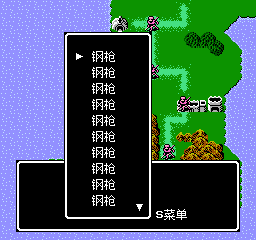
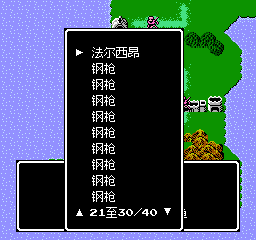
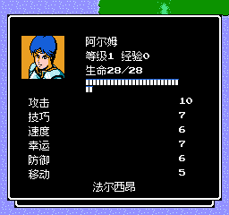

1. 旧长列表：下箭头确认了未显示的道具
玩家目标：滚动到后十项，继续寻找需要领取的道具。
原问题：画面仅显示第1至10项，点击下箭头却进入第11项魔道戒的领取人选择。
结果：下箭头现只改变可见范围，未选择或移动物品。
已修复升级页无法用鼠标继续、长列表箭头误确认、菜单边框误触操作。仅运行新增分支和共享点击处理的定向检查，72项通过。保留3张关键画面，旧轮界面未重拍。

玩家目标：滚动到后十项，继续寻找需要领取的道具。
原问题：画面仅显示第1至10项，点击下箭头却进入第11项魔道戒的领取人选择。
结果：下箭头现只改变可见范围，未选择或移动物品。

玩家目标：点击上下箭头浏览，再点击屏上实际显示的道具。
原问题：旧菜单没有范围说明，箭头和边框都被换算成选项。
结果：两次点击到达21至30/40，法尔西昂明确显示；页脚和边框不确认隐藏条目。

玩家目标：把屏上可见的法尔西昂交给阿尔姆。
原问题：旧箭头会把未显示的第11项当作已选道具。
结果：领取第21项法尔西昂，行囊由40变39，第11项魔道戒仍保留；存档续读保持一次结算。
| 问题 | 提示/理解 | 实际修复与证据 |
|---|---|---|
| P1 自动行动/敌方回合升级页 | 确认继续 用一直使用的鼠标确认，然后返回战场。 | 鼠标进入与键盘相同的确认入口，只确认奖励，由原回合协程完成剩余行动并释放锁。 定向记录1、定向记录2 |
| P2 世界仓库等主菜单长列表 | 上下箭头 浏览更早或更晚的条目。 | 独立页脚与原位图箭头负责滚动，显示可见范围；只确认可见条目。 定向记录1、定向记录2 |
| P2 战斗系统菜单、战利品确认菜单 | 菜单边框/空白 装饰与留白不表示确认操作。 | 边框、页脚和留白不命中；可见行仍通过真实鼠标输入确认。 定向记录1、定向记录2、定向记录3 |
真实计时的升级分支实际完成敌方剩余行动、下一回合和保存续玩。为规避重复截图，已有升级页仅检查新增输入与回调。文字、位图箭头和页脚留白结合运行画面及布局校验核对；没有全量回归或后期自然通关结论，也未证明屏幕阅读器或完整无障碍合规。